CHICKENS
Did you know?
Researchers have documented over 30 distinct vocalizations that chickens use to communicate with each other. They have specific, different alarm calls for predators coming from the air (like a hawk) versus predators coming on the ground (like a fox or raccoon) and the rest of the flock responds differently depending on which call is sounded! They even have distinct sounds to call their chicks, announce they've laid an egg, or tell the flock that they found top-tier food.
Chicken Gallery

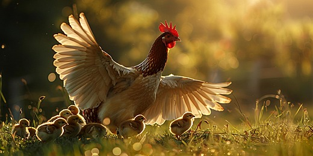
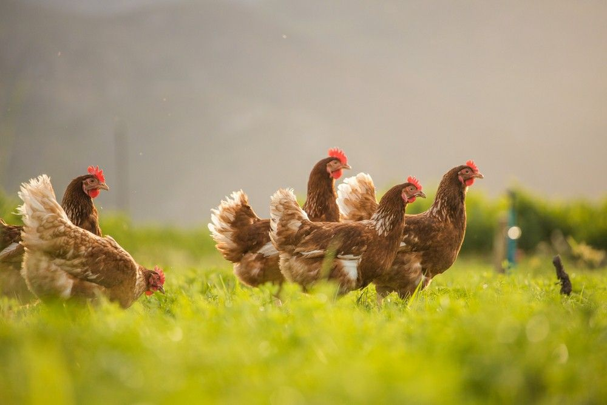
The History Of Chickens
Learn about the past of chickens :D
Ancient Origins & Dinosaur Heritage
While popular culture often claims that chickens directly descended from the Tyrannosaurus rex, chickens did not evolve from T. rex directly; rather, both modern birds and T. rex share a close common ancestor within the theropod dinosaur family tree. Over tens of millions of years, small feathered theropods which shared key traits with larger relatives like T. rex, such as hollow bones, bird-like lungs, three-toed feet, and wishbones survived mass extinction events and gradually evolved into modern avian dinosaurs, including chickens.
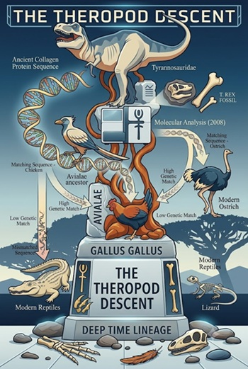
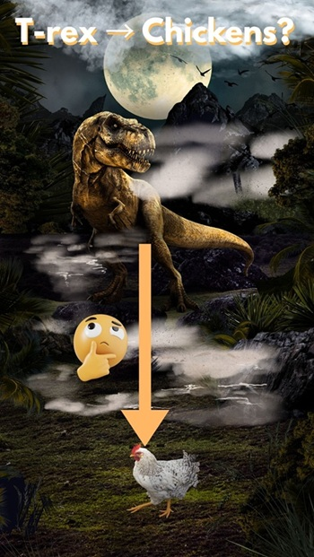
Early Domestication
The history of modern domestic chickens began thousands of years ago in the dense bamboo forests of Southeast Asia. The primary ancestor of today's chicken (Gallus gallus domesticus) is the wild red junglefowl, which was initially drawn to human settlements around early farming communities. Early humans valued these birds initially not as a primary food source, but for cultural significance, rituals, and cockfighting.
Global Expansion & Romans
As ancient trade routes like the Silk Road expanded across continents, domesticated chickens swiftly migrated from their South Asian origins throughout Eurasia, North Africa, and the Mediterranean basin. What began as a rare exotic bird quickly evolved into a cornerstone of global agriculture and cultural life. The Romans, in particular, played a pivotal role in elevating poultry farming to a sophisticated science. Recognizing the bird's utility, they systematically bred chickens to optimize both egg production and meat yield, establishing early precursor models to modern factory farming. Beyond agriculture, chickens held profound religious and strategic importance in Roman society; sacred chickens (pulli) were routinely carried alongside legions into war, where their feeding behaviors were eagerly interpreted by augurs as divine omens predicting battle outcomes. Simultaneously, across the Mediterranean in ancient Egypt, revolutionary technological advancements were taking place. Egyptian engineers developed massive, clay-brick mud incubators heated by controlled fires a secret, closely guarded trade that bypassed natural broodiness and allowed tens of thousands of eggs to be artificially incubated at a time, effectively laying the groundwork for large-scale poultry mass production.
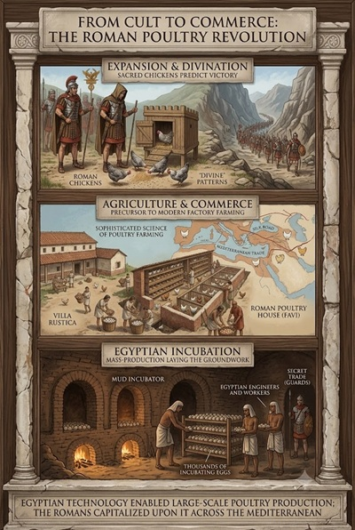
Modern Industrialization
Throughout the 19th and 20th centuries, the humble domestic chicken underwent a dramatic evolutionary and agricultural overhaul, shifting from a modest backyard scavenger into a globally dominant industrial powerhouse. The advent of formal poultry associations in the mid-1800s introduced standardized breed classifications—such as the American Standard of Perfection—igniting a widespread passion for poultry exhibition and laying the framework for systematic, record-based selective breeding. As foundational genetic science progressed into the early 20th century, agricultural scientists unlocked the ability to manipulate avian biology for distinct production goals. This scientific breakthrough formally bifurcated the poultry industry into two highly specialized genetic lineages. On one side, breeders developed high-yield layer hens engineered exclusively for high-frequency egg production, capable of laying hundreds of eggs annually while maintaining a lightweight frame to maximize feed efficiency. On the other side, they engineered fast-growing broiler chickens bred specifically for rapid muscle development and maximum meat yield, reaching full market weight in a tiny fraction of the time required by traditional heritage breeds. This biological specialization was soon matched by revolutionary mechanical and medical advances. The mid-20th-century development of automated feeding systems, climate-controlled environmental housing, balanced synthetic nutrition, and widespread vaccination programs completely redefined the industry. Together, these technological leaps moved poultry farming out of the family farmyard and into a hyper-efficient, fully integrated global supply chain.
Different Breeds Of Chickens
Discover the breeds of chicken our planet has!
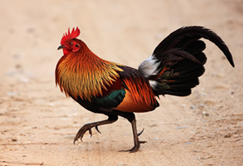
Red Junglefowl
Native to Southeast Asia, this wild avian species was first tamed thousands of years ago. It is essential for understanding the evolutionary transition from wild birds to modern domestic poultry.
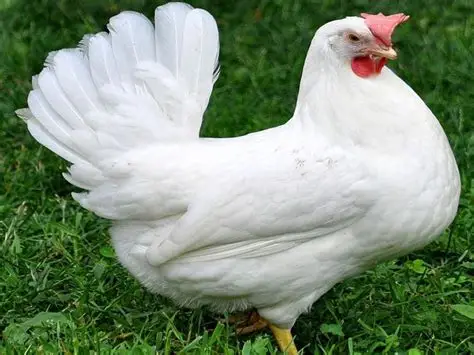
White Leghorn
Originating in Tuscany, Italy, and refined in North America during the 19th century, Leghorns are world-renowned for their unmatched egg production efficiency (capable of laying over 280–300 white eggs per year).
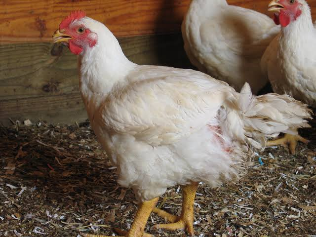
White Cornish-Cross
A modern hybrid cross (typically Cornish and White Plymouth Rock), this breed was engineered in the 20th century specifically for rapid growth, massive breast meat yield, and high feed conversion efficiency.
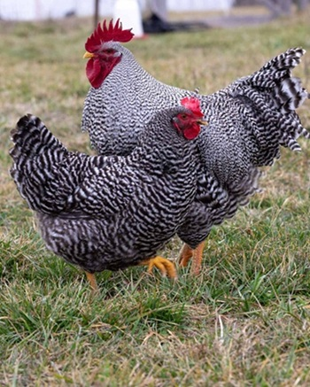
Plymouth Rock
Developed in Massachusetts in the mid-1800s, the Barred Plymouth Rock became the foundation of early American commercial poultry farming due to its docility, cold hardiness, and reliability for both eggs and meat.
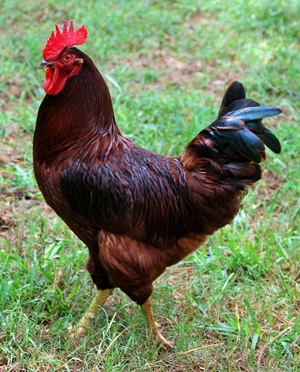
Rhode Island Red
Developed in Rhode Island and Massachusetts in the 1890s, this hardy breed became famous worldwide for its prolific production of large brown eggs and adaptability to farm environments.
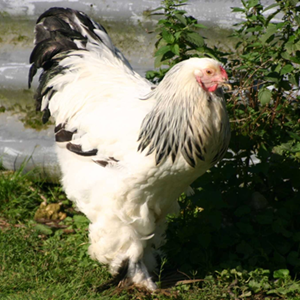
Brahma
Imported to the US and UK in the mid-19th century from Chinese shipping stock, the massive, feather-legged Brahma dominated the American meat market from 1850 through 1930 and sparked historical "poultry mania."
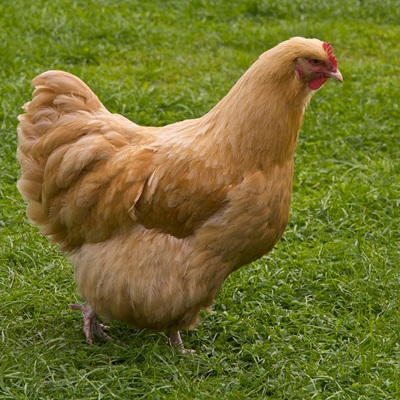
Orpington
Bred in England by William Cook in the late 1800s, Orpingtons were engineered as dual-purpose utility birds capable of laying well through cold northern European winters while offering heavy meat yield.
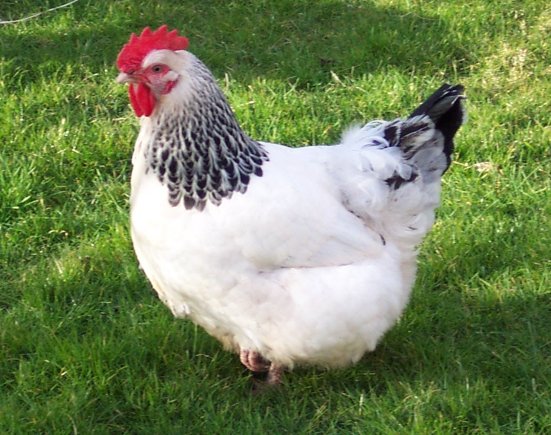
Sussex
One of the oldest British breeds, originating in Sussex over 2,000 years ago (likely utilized during the Roman occupation). It served as the primary table bird for London markets throughout the 18th and 19th centuries.
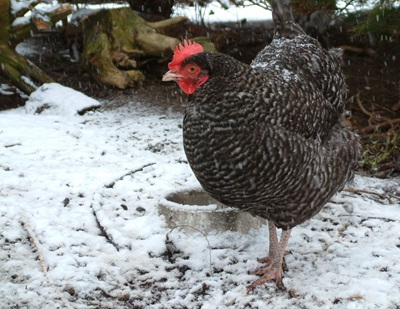
Marans
Originating in ancient China, Silkies are famous for their fur-like plumage, black skin and bones (fibromelanosis), and five toes per foot. Marco Polo recorded encountering "fuzzy chickens" during his 13th-century Asian travels.
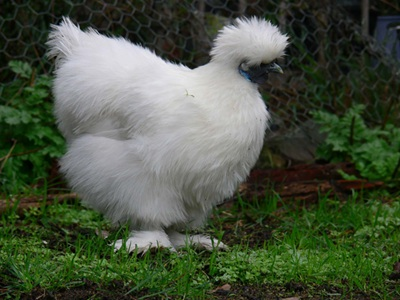
Silkie
Originating in ancient China, Silkies are famous for their fur-like plumage, black skin and bones (fibromelanosis), and five toes per foot. Marco Polo recorded encountering "fuzzy chickens" during his 13th-century Asian travels.
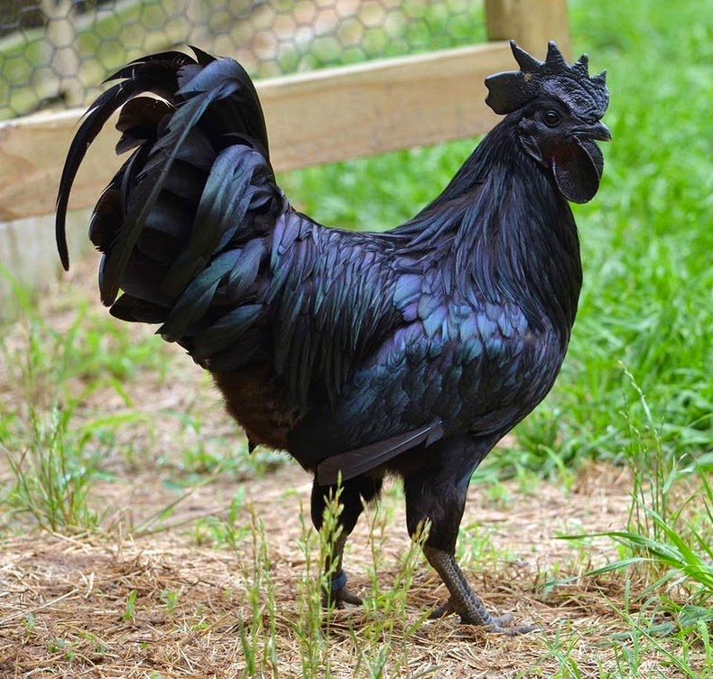
Ayam Cemani
Native to Java, Indonesia, this rare breed carries a hyper-expression of hyperpigmentation (fibromelanosis), resulting in entirely black feathers, beak, skin, organs, and bones. Historically used for ceremonial and medicinal purposes.
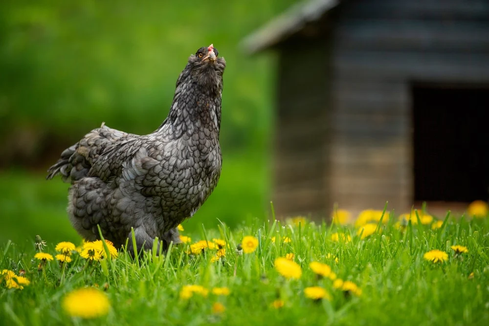
Araucana
Originating in Chile from stock raised by the indigenous Mapuche people, these birds are famous for laying natural blue eggs due to a genetic mutation that deposits oocyanin in the eggshell during formation.
How Chickens Influenced Cuisines?
Find how our global friends use chicken in their cuisine!
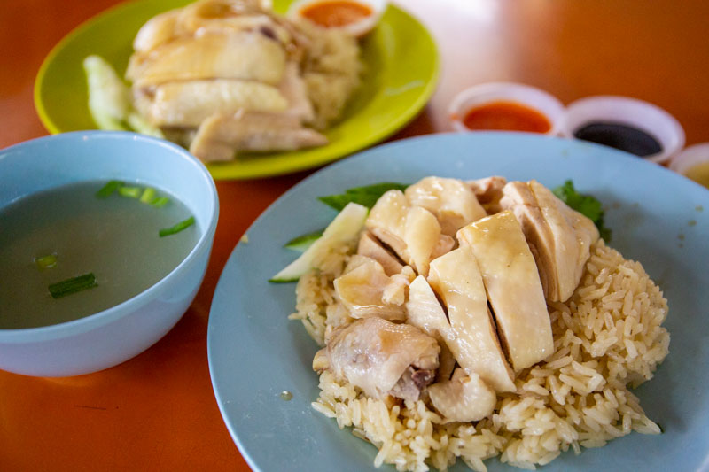
Hainanese Chicken Rice(🇸🇬)
Poached whole chicken served alongside fragrant rice cooked in chicken fat and broth, paired with chili sauce, ginger paste, and dark soy sauce.
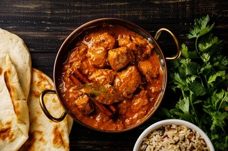
Chicken Tikka Masala(🇬🇧)
Tender pieces of roasted marinated chicken (chicken tikka) served in a rich, creamy, tomato-based spiced curry sauce.
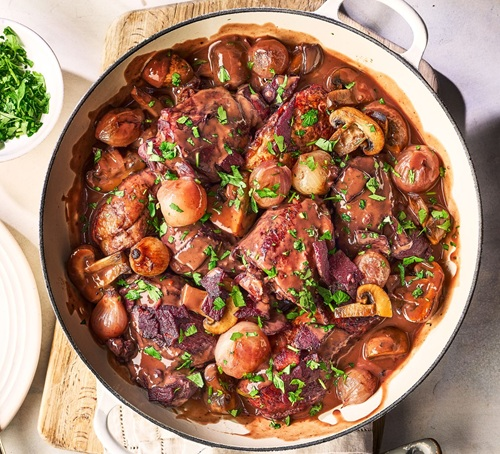
Coq au Vin(🇫🇷)
A classic French stew where chicken (traditionally a tough rooster) is braised slowly in red wine, lardons (bacon), mushrooms, and garlic.
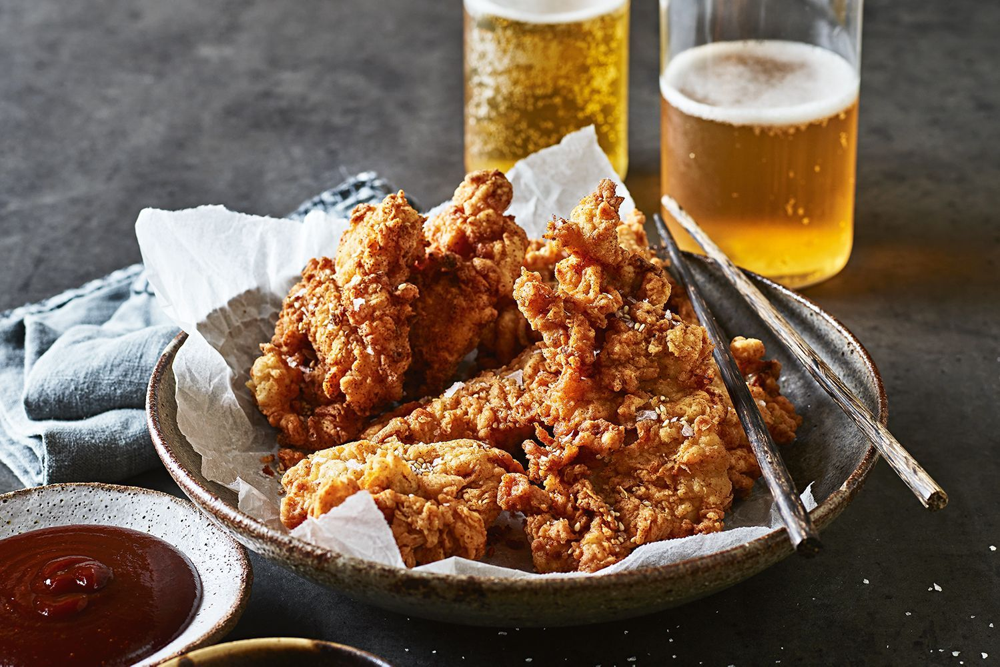
Chimaek(🇰🇷)
Double-fried chicken seasoned with a crackly, thin crust, usually brushed with a sweet and spicy Gochujang glaze or garlic soy sauce.
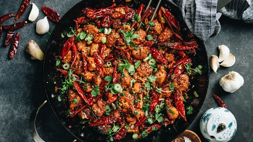
La Zi Ji/Sichuan Spicy Chicken(🇨🇳)
Crispy fried chicken bites tossed with heaps of dried red chilies and Sichuan peppercorns for a signature spicy, mouth-numbing flavor.
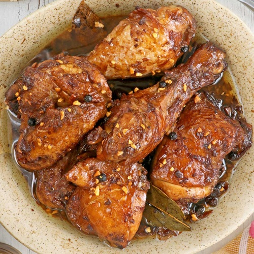
Chicken Adobo(🇵🇭)
The iconic Filipino dish of chicken simmered until tender in a rich, savory-tangy marinade of soy sauce, vinegar, garlic, and bay leaves.
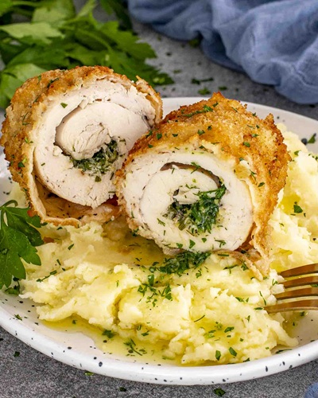
Chicken Kiev(🇺🇦)
A boneless chicken breast rolled around cold garlic herb butter, then coated in breadcrumbs and deep-fried until crisp.
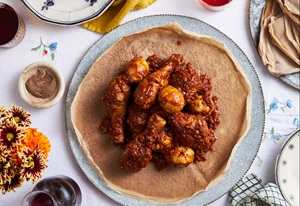
Doro Wat(🇪🇹)
A rich, spicy Ethiopian chicken stew slow-cooked with berbere spice, clarified butter, and onions, served with hard-boiled eggs over spongy injera bread.
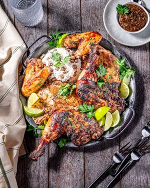
Jamaican Jerk Chicken(🇯🇲)
Smoky, fiery chicken marinated in scotch bonnet peppers, allspice, and thyme, then slow-grilled over pimento wood for an iconic charred kick.
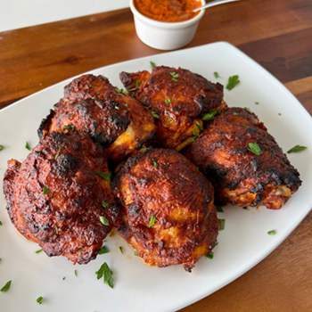
Peri-Peri Chicken(🇵🇹)
Flame-grilled chicken charred and basted in a fiery, tangy marinade of bird's eye chilies, citrus, and garlic.
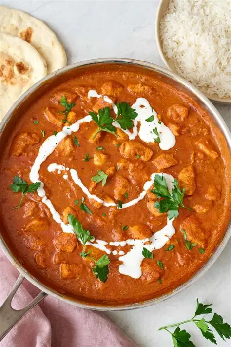
Butter Chicken(🇮🇳)
Tender spiced chicken simmered in a velvety, rich tomato sauce finished with butter and cream.

Chicken Parmigiana(🇮🇹)
A breaded, crispy chicken cutlet topped with rich tomato sauce and melted mozzarella or parmesan cheese.
Mini-Game
Click to catch the different chickens